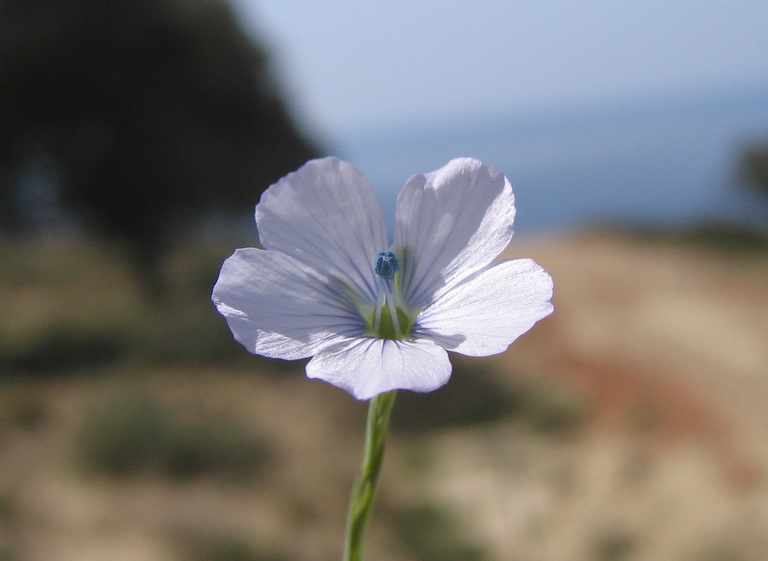
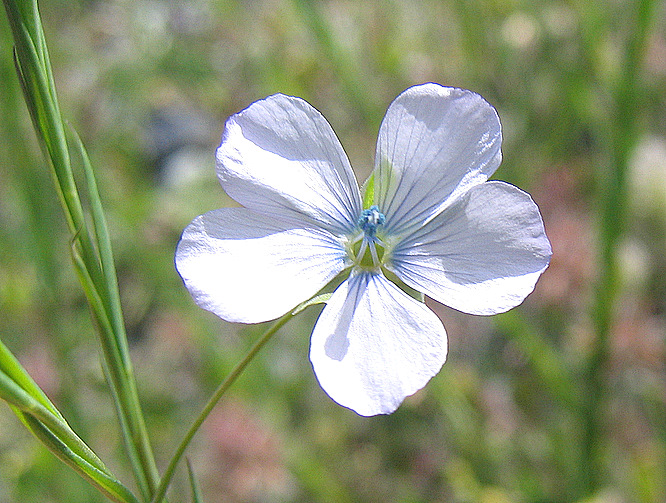
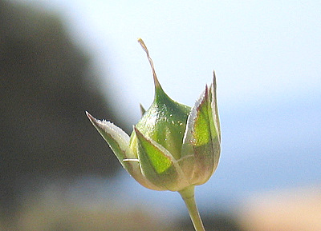
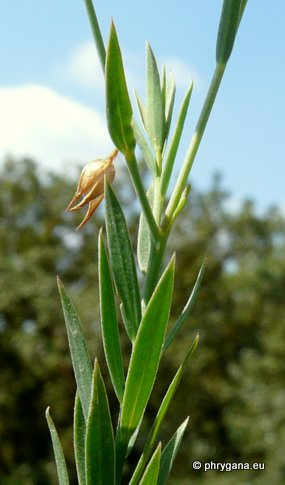
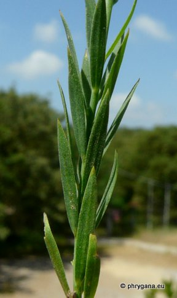
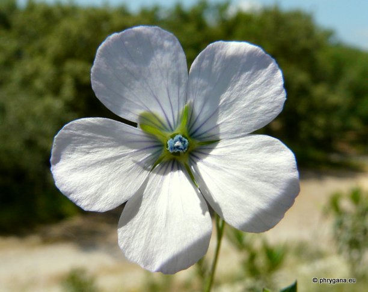

| PHRYGANA | Fauna | Flora | Galles | liste des espèces |
contact -
info - commentaires phrygana1 (at) gmail.com |
| Particularités crétoises | nouveautés | Mines | ressources naturelles |
| Linum bienne MILLER |
| 58 | Flora | LINACEAE | Linum L. |
 Linum bienne Agia Paraskevi 15 avril 2007 |
| syn.: Linum angustifolium Huds. | |
| Pale flax -- le Lin bisannuel -- Smalbladig vlas -- Schmalblättriger Lein | |
| Plante grêle, glabre, à tige rameuse dès la base; ramifications dressées | |
| Feuilles: étroites linéaires, à 1 - 3 nervures, appliquées contre la tige. | |
| Tige: droite, grêle, ramifiée. | |
| Fleurs: corolle bleue pâle, veinée de bleu foncé; pédoncule plus long que les sépales; sépales intérieurs à marges ciliées et membraneuses; anthères bleu violacé ovoïdes (2x aussi longues que larges); stigmates linéaires, en massue. | |
| Fruit: une capsule large de 4 - 6 mm; graines 2 - 3 mm. | |
| Hauteur: 20 - 60 cm | Type biologique: hémicryptophyte bisannuel |
| Floraison: février mars avril mai juin | |
| Altitudes: 0 - 1100 m | |
| Statut en Crète: indigène -- native | |
| Biotopes en Crète: phrygana, lieux rocheux, sols sablonneux, bords de chemins, dunes, forêts claires | |
| Distribution: Europe occidentale et méridionnale, Afrique du Nord, Asie du Sud-Ouest | |
| Espèce héliophile. | |
|
 Linum bienne Agia Paraskevi 15 avril 2007 |
 Linum bienne Agia Paraskevi 15 avril 2007 |
|

 Linum bienne Armeni 10 mai 2012 |
|
 Linum bienne Armeni 10 mai 2012 |
| 17 mai 2012 |
| © paul fontaine -- © Phrygana.eu 2007 -- 2013 |